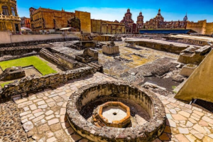

Quiz: Incas, Mayas y Aztecas
Curiosidades
- Incas: Construyeron Machu Picchu, una ciudad entera en las montañas sin usar mortero en las piedras.
- Mayas: Desarrollaron un sistema avanzado de escritura jeroglífica y fueron grandes astrónomos.
- Aztecas: Su capital Tenochtitlán fue construida sobre un lago, con canales y puentes.
Incas - Machu Picchu

Mayas - Chichén Itzá

Aztecas - Templo Mayor